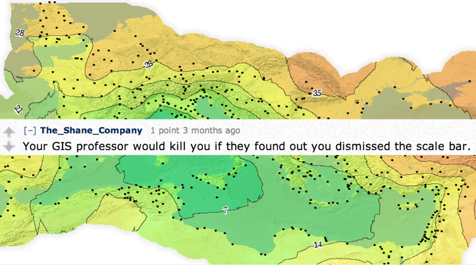
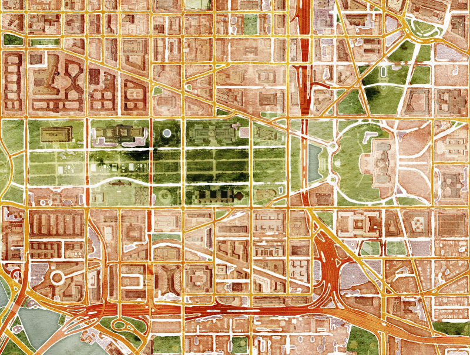
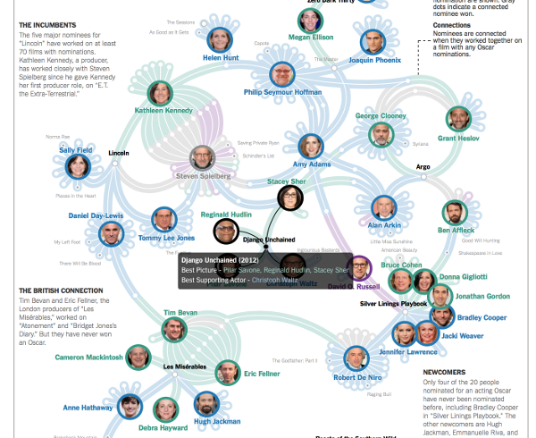
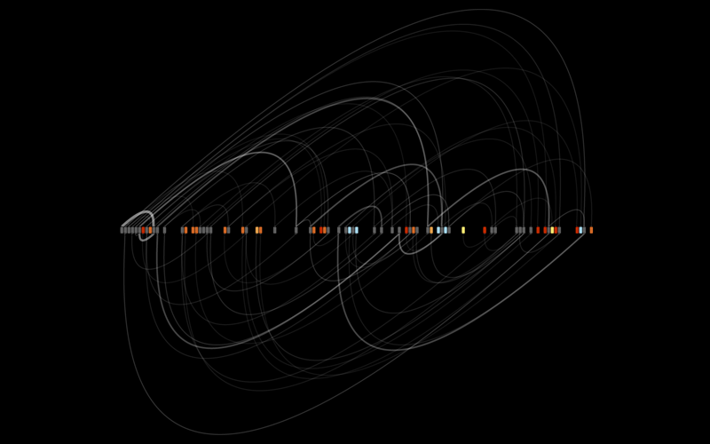
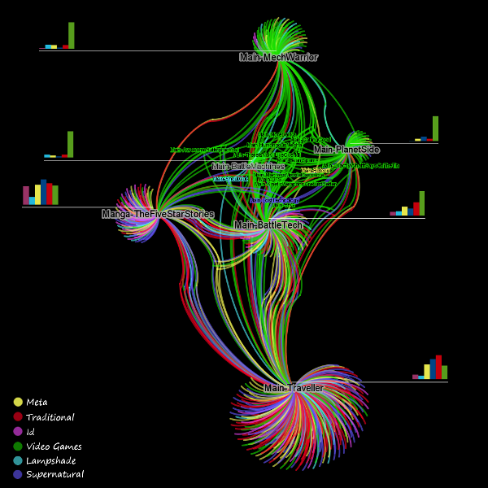

This is part of a talk I gave at #txdhc. It leaves out "principles of interloping in network science" which I'll try to put in a later post.
When I was invited to give a talk at The Texas Digital Humanities Consortium's First Annual Conference about networks and specifically networks in the humanities, I asked myself the same thing I did when I was asked to write D3.js in Action: how can I speak on something for which I don't have a degree? How can I write a book about programming when I don't have a degree in computer science?
Similarly, how can I give a talk about networks when I don't have a degree in network science? Obviously, I have some experience with networks, such as my work representing topic models as a network.

I’ve noticed, in the past, when I’ve given more involved talks or papers dealing with networks, that I find both my audience and myself more comfortable with focusing on network representation, commonly referred to as network visualization. The network visualization of the results of a topic model is rather effective and sophisticated, I think, but I also don't have a degree in design or information science, so once again I'm outside of my domain of credentialed expertise.
So, sometimes I dodge that position and focus on the use of networks in the publication of research. Networks as a rhetorical device, in tandem with text and maps, especially in the genre of interactive scholarly works, like Kindred Britain, and especially its Stories component, that ties together text, maps, networks, and other data visualization.
But I'm not a publisher, and have never worked for a publisher. So, I fall back on my old standby, ORBIS, and instead focus more on transportation networks and especially historical transportation networks.
But I also don't have a degree in geography or in classics. Like many people who shift away from their original domain of expertise into a well-defined field with its own journals and conferences, I begin to feel like there’s really only one subject with which I might treat as an expert: Imposter Syndrome.
But there are examples of successful practitioners working in fields like this with a wealth of established research. After all, Franco Moretti is not a statistician. Or, as you may have heard it stated:
Franco Moretti is not a statistician!!!!!!11!111oneone!one
And while he may not be a statistician, neither is he an imposter. Rather, like me, and like many people in digital humanities, he is an interloper.
And so that’s what I’m here to talk about: Interloping. I think interloping, more than computational approaches or the digital broadly construed as the object of study, defines digital humanities. And scholars are not the only ones interloping. We find ourselves awash in accessible, powerful tools and techniques that seem well-suited for our research and entice us into fields and disciplines with which we haven’t the wealth of domain expertise that we do in our primary fields.
It means that we approach these techniques in a naive manner, but as humanists, we have recourse to this seeming impediment. Yes, when you first begin to model your study of literature using networks, you do so as a beginner. But, as Shunryu Suzuki notes in Zen Mind, Beginner's Mind, this perspective is open to possibilities in a way that the better versed may not be. This approach is idealistic, I am not. I know, from experience, that the interloper is constantly exposed to critique for using methods naively, for not understanding basic principles of the research method and existing scholarship, and for suggesting narratives that clash with the traditional understanding of a field.
There are, however, several mitigating factors when it comes to the principles of interloping in network science. The first requires a detour into geography. I know you didn’t sign up for a geography lecture, and so I’ll keep it short, but in my defense, I’m always mentioning networks when I talk about geography, so at least I’m consistently disappointing.
I titled my talk neotopology because I believe that this network turn resembles the spatial turn in more ways than one. One of those ways is the presence of a vibrant community of practice growing outside the traditional domains where in one case network analysis/visualization and in the other case spatial analysis/visualization traditionally occurs. Neogeography, in short, refers to the use of cartographic and spatial analytic tools and techniques by designers, humanists, software developers and others outside of the traditional domains of GIS, GIScience and cartography. It has, at times, caused some consternation and led to fierce claims both in digital humanities and in the tech industry that the geographic information systems being developed by such interlopers are, "Not GIS". It has also elicited, from time to time, angry responses from these traditional domains directed at flaneurs running amok with ArcGIS and Google Maps API. Which itself has also spurred defensiveness.

But neogeography has produced incredible work, including the amazing Voronoi experiments that Jason Davies has been creating, satellite projected views of the US/Mexico border by Mike Bostock, and incredible innovation in the tile space, such as base maps that look like wood inlay, or Stamen's watercolor map here enhanced with semi-transparent satellite imagery for great effect:

Add to this online mapping applications developed in fan culture, such as that of the LOTR Project, and we can see a vibrant community of practice in a world once dominated by GIS Professionals and GIScience academics. While neogeography is a product of broad accessibility of GIS tools and techniques, it is further defined by its strong integration with information visualization. Geospatial information visualization refers to something besides maps and atlases, it refers, I would argue, to the primacy of a system or model for which the geospatial data is just one view into that model. There’s another thing that neogeography has in common with neotopology, and which allows me to end my geography detour: humanists are not the only interlopers in the field. In the same way that journalists, designers and software developers and humanities scholars have flooded into spatial analysis and visualization, the same groups are flooding into network analysis and visualization.



Here we see three examples among many. The first is Mike Bostock, creator of the D3.js information visualization library and award-winning journalist at the New York Times, taking a network perspective on the Oscars. The second is designer Christian Swinehart's amazing exploration of Choose-Your-Own-Adventure novels, where the network connects passages in the novel based on the decision points at the ends of those passages, with gruesome endings in vivid color. The last is the result of my own look into the way in which TV Tropes works are connected by shared tropes, and what it might mean to bridge the disparate genres explored by that community.
But there are striking differences in the situation surrounding the spatial turn and the situation surrounding the network turn. When the Anne Knowles edited Past Time, Past Place: GIS for History was published, it was 12 years ago. This was four years before Twitter, two years before Facebook and a time when English Wikipedia had only 20,000 articles. In 2002, scholars like Willard McCarty in "Humanities Computing: Essential Problems, Experimental Practice" were not even referring to digital humanities, but rather "humanities computing" and "computer assisted humanities":
...through Galison’s metaphor of the trading zone, it gives depth of meaning to the often ad hoc and ill-understood practice of collaboration in the computer-assisted humanities: it helps us to understand how people from very different fields can do laboratory-based research well--do research better than alone, or at all--while remaining undiluted intellectually…
Most notably for humanist scholars trying to use GIS, they had access to either a very user unfriendly ArcGIS 8, or write their own code. Google Earth was an obscure hermeneutic toy known as Earthviewer 3D, created by a company you likely never heard of. And it's not even fair to peg Past Time, Past Place to 2002, since this volume was a collection of essays that occurred after an enthusiastic adoption from which we can extrapolate an even earlier date of sophisticated engagement. We are so early in the Network Turn that there has appeared, as yet, no comparable volume for networks.
Our only real landmark comparison for Networks in Humanities is Tim Tangherlini’s “Networks and Network Analysis for the Humanities” funded by the NEH Institute for Advanced Topics in Digital Humanities. It included participation by academics such as Katy Borner, Franco Moretti and Dave Blei, but also industry interlopers like Fernando Diaz, then senior research scientist at Yahoo! Research and now at Microsoft Research. In contrast to the bleak situation 12 years ago, we began making this network turn in a dramatically different ecosystem. This is not to say there are not conferences with the aim of focusing on networks in the humanities, such as Arts, Humanities, and Complex Networks, a satellite symposium at NetSci that's been running for five years. Rather, I mean that network analysis in digital humanities scholarship is so early on that it hasn't even managed to put together and publish a single edited volume.
There is another, and for academics sharper, contrast. The network turn, after all, is taking place after the spatial turn. That means it's taking place with a model for how to respond to collaboration and colonization by a method and its attendent experts. And while there are rich reflections on what it means to bring spatial analysis in contact with humanities scholarship it is even more readily apparent in the covers and titles of similar volumes published since Past Time, Past Place, most of which do not have covers featuring maps made with GIS packages but rather word clouds, the Peutinger table (neogeography from the Roman world), or abstract paintings.
As digital humanities scholarship continues to mature, the old call to authority about how to use digital objects, tools and related techniques is not so intimidating. We learned, as we deconstructed GIS and NLP, that we could use these things, too. The spatial turn was not about historians learning GIS, it was about everyone getting access to a host of geospatial data, tools and techniques, and then doing whatever they wanted with it, until they felt perfectly comfortable doing "GIS" or not. It was not that GIS could not handle the fuzziness, incompleteness, and uncertainty of humanities scholarship, but that the practitioners who had built and designed (and to be fair to many, generously taught us) traditional mapping and GIS tools simply had not thought of it. It was up to the interlopers to address these approaches and develop methods to deal with them.
We will not follow the same path with network analysis, because the environment today is thus vastly different. And there’s something even more fundamental about networks that makes us, as interlopers, more equipped to adopt and adapt them: Networks are simple. Networks are whatever you define them as, within a basic set of attributes. While there are best practices insofar as how to constrain and structure a network, it is fundamentally a view of the phenomenon you wish to study--a network perspective. You will often hear that you cannot use, for instance, an n-partite network, or a hypergraph. But that advice is from the perspective of computing across the network to measure centrality, clustering, modularity and other traditional network measures. If you’re using a network as a supplement, as a view into your work that emphasizes the structure rather than the components, and you’re not computing centrality, then it is valid if only as part of a dialectical examination in tension with your traditional scholarship. A network is a view of a system that preferences the importance of connections between objects in that system and the emergent properties of those connections when examined in the aggregate in a way distinct from a demographic or biographic or geographic perspective typical in humanities scholarship.
This is, I think, where we shine as humanists and interlopers. Our work with networks is not our sole methodology or concern, and our engagement with networks reflects that in the same way that our engagement with spatial analysis has. Are more central people more likely to also have stronger metadata? Does betweenness correlate with nationality? And how does it compare to the networks and network structures discovered or created not only by other academics, but by those created by journalists and in fan culture and in industry?
To return to this definition of digital humanities as interloping, it serves to go back to McCarty's examination of the Trading Zone:
In his magisterial study, Image and Logic: A Material Culture of Microphysics, Galison shows us in detail how individuals engaged in a bundle of rather disparate activities came together and successfully collaborated to solve the most difficult experimental problems of their day. His historiography is centred on the machinery these activities had in common (e.g. the devices invented to study subatomic interactions) and the users’ intellectual and pragmatic negotiations of knowledge across disciplinary boundaries. He proposes and develops an anthropological-linguistic analogy for these negotiations, which he calls the Trading Zone. In a typical trading zone people from mutually incomprehensible cultures come together to trade objects of interest. To do that, as in fact happens, they develop a highly restricted proto-language or pidgin for their negotiations. This pidgin allows them to reach agreement among themselves about objects of trade even though outside of the zone, within their own cultures, their understandings and uses of these objects differ radically.
We are, in our engagement with networks, interloping. But network science teaches us that the interlopers, the people who connect disparate, unconnected groups, derive power from that position. I think all of us, after thinking deeply about networks, have had it influence the way that we engage in the networks we take part in. The network turn itself is one of those networks.
Notes from the talk:
-
There was some controversy over whether network analysis is "the trading zone" and whether one can reasonably refer to a network science. I must admit to using network science in a very pragmatic manner, simply meaning it to stand in as a blanket statement for social network analysis, transportation network analysis, and various disparate but established fields and sub-disciplines that have used networks for decades.
-
Insofar as I mean "the network turn" I'm not referring to the application of network analysis by any research agenda, since obviously scholars in a number of fields have long been using network analysis. Rather, I refer to the widespread adoption of network analysis and visualization by humanities scholars to address traditional humanities research questions.
-
Neotopology is a broader category still, embracing the growing prevalance of individuals visualizing their Facebook friends, or of LinkedIn offering just such a service to its subscribers, or of the growing variety of uses that force-directed algorithms are being put to.